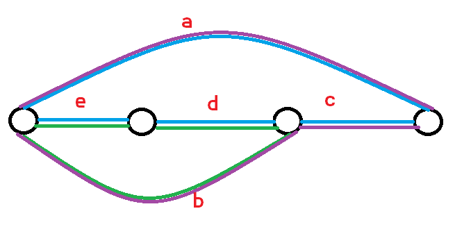
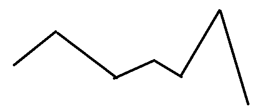
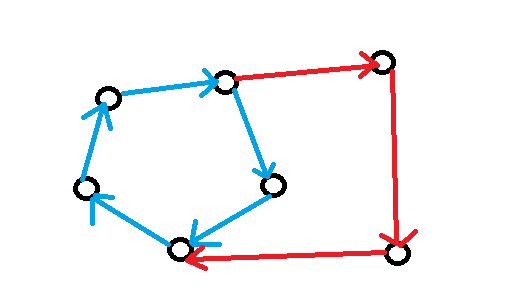

CWOI 杂题选做(23Jul,23Aug)
麻了这集训怎么改的完题啊。
如果我觉得实现很简单的就不放代码，甚至可能就是口胡。
细节比较复杂的我会写一写。
如果实在没时间我就直接贺代码，前提是确保如果出原题我能写出来。
也有一种可能是太忙了没来得及放代码。
后期可能会按照趣味程度排序，最后放的都是重量级炫酷神题。
SGU311 Ice-cream Tycoonψ(｀∇´)ψ
商店里初始时没有物品，支持以下两种操作
增加 \(n\) 个价格 \(c\) 的物品
对于一名想用 \(t\) 元钱购买前 \(n\) 便宜的物品的顾客，若这些物品总价不超过 \(t\) 则从商店中移除，否则不做操作，
\(1\le n, c \le 10^6, 1\le t \le 10^{12}\)
Memory Limit: 64MB
送分复健题。
考虑权值线段树维护，每次线段树二分找到对应位置。
然后前缀求和并区间修改即可。
CF620E New Year Treeψ(｀∇´)ψ
给一颗 \(n\) 个节点的树，现在每个节点上有一个颜色 \(c_i \le 60\)。
有 \(m\) 个查询：
把一个子树中所有的节点都赋成同样的颜色
求出一个子树中出现过的颜色个数。
\(1\le n, m\le 4\times 10^5\)。
也是简单题，子树整体操作很容易思考到使用 dfn 转成序列问题。
注意到 \(c_i \le 60\)，可以对每个位置维护一个二进制状态，使用线段树维护这个状态即可，你可以看作弱化版的雨天的尾巴（那题线段树维护的是线段树不是类似 bitset 状物）。
CF487E Touristsψ(｀∇´)ψ
有 \(n\) 个点 \(m\) 条边的无向图，每个点有权值 \(w_i\)。
你需要支持两种操作：
修改一个点的权值。
查询从 \(u\) 到 \(v\) 的路径，不经过重复点，可能去到的点中最小的权值。
\(1\le n, m, q \le 10^5, 1\le w_i \le 10^9\)。
在图上做这种路径查询操作以及单点操作是困难的。
注意到“不经过重复点”，这给了我们一个提示，如果是不经过重复边就可以缩边双。
然后缩完之后就得到了一颗树，对这个树做树链剖分即可。
但是这里是点双，直接缩是不行的，因为一个点可能在多个点双连通分量里面。
于是这里有一个技巧，有一种叫圆方树的数据结构，可以把这个问题转成树上的。
具体操作可以看看我的博客（暂时没写）。
然后建出圆方树之后，问题就转化为了树上查询。
我们不妨把方点的权值设为与它相连的节点的权值的最小值。
然后每次单点修改就行了。
但是一个问题是，如果我们修改的是割点，它会和很多个方点相连，这样就被卡到 \(O(n^2)\) 了，所以有一个技巧。
我们令方点维护的是以某个圆点（比如 \(1\)）为根的时候，它的儿子圆点的权值最小值，这个维护一个 multiset 就可以了。
然后询问的时候只需要考虑 \(\text{LCA}(u, v)\) 是不是方点，如果是方点，还需要在路径询问的基础上和 \(\text{father}(\text{LCA})\) 的权值取 \(\min\)。
这个是 Trivial 的。
CF1284D New Year and Conferenceψ(｀∇´)ψ
给 \(n\) 个演讲，第 \(i\) 个演讲在两个报告厅中举行
第一个报告厅中的开始时间是 \(sa_i\)，结束时间是 \(ea_i\)，
第二个报告厅中的开始时间是 \(sb_i\)，结束时间是 \(eb_i\)。
问有没有演讲的子集 \(S\)，使得所有 \(S\) 中的演讲都是在一个报告厅中不存在重叠，在另一个中重叠？
\(1\le n \le 10^5\)。
一个巧妙做法，我们维护两个集合 \(S_A,S_B\)，分别表示在 \(A,B\) 中会重叠的所有区间对 \((i, j)\)。
然后问题答案为 YES 当且仅当 \(S_A \not= S_B\)，这是显然的。
然后怎么维护区间呢？这个东西是 \(O(n^2)\) 的，不好做，但是，我会哈希！
设计 Hash 函数 \(H(S) = \sum\limits_{(i, j) \in S}^{}v_i \times v_j\)。
其中 \(v_i, v_j\) 是随机分配的权值，也可以是 \(v_i = i\) 这样的。
然后我们算贡献的时候用 set 什么的数据结构整体处理可以 \(O(n \log n)\) 。
还有一个更好写的 Hash 做法，等会写。
QOJ2065 Cyclic Distanceψ(｀∇´)ψ
Gym100739E Life as a Monsterψ(｀∇´)ψ
CF319E Ping-Pongψ(｀∇´)ψ
CF1149C Tree Generator™ψ(｀∇´)ψ
CF264E Roadside Treesψ(｀∇´)ψ
CF226E Noble Knight's Pathψ(｀∇´)ψ
HDU7144 Treasureψ(｀∇´)ψ
ZOJ2674 Strange Limitψ(｀∇´)ψ
CF687B Remainders Gameψ(｀∇´)ψ
HDU6265 Master of Phiψ(｀∇´)ψ
POJ3910 GCD Determinantψ(｀∇´)ψ
Voyager1ψ(｀∇´)ψ
矩阵游戏ψ(｀∇´)ψ
Power Towerψ(｀∇´)ψ
Borderψ(｀∇´)ψ
[NOI2016] 网格ψ(｀∇´)ψ
给定 \(n \times m\) 的网格，其中 \(c\) 个格子是黑色的，其余格子都是白色。
称两个白色格子是连通的，当且仅当这两个白色格子相邻（四连通）或存在另外一个白色格子与这两个格子连通。
问至少要将多少个白色的格子染成黑色，使得至少存在两个白色格子不连通。
\(1\le T \le 20, 1\le n,m \le10^9, \sum c \le 10^5\)。
观察到答案上界为 \(2\)，也就是考虑角上（咦，我之前是不是开过一个答案上界很小的专题，似乎有这个玩意儿），类似围棋。
注意到要至少两个白格子不连通，而 \(nm = 1\) 是可能的，所以有可能无解。
然后如果已经有被围住的，答案为 \(0\)，如果是围着只剩一口气，那么答案就是 \(1\)。
否则答案就是 \(2\)。
然后这样判起来还是有点麻烦，我们注意到黑点数量不多，考虑从这个入手。
如果存在一个闭合的黑点连通块且不是围住了边框，答案为 \(0\)。
然后如果存在一个黑点连通块，使得它们差一个黑点就连通了，答案为 \(1\)。
其他时候答案为 \(2\)。
第二个情况还是不好做，怎么办怎么办？？？？？
好像只能考虑白点了，先忽略点数级别问题。
第二个情况就是，原图存在割点。
然后看看能不能，忽略一些点（常见套路）。
注意到其实只有和黑色格子挨着的的才有用，其它的肯定都连通了，我们只关心被我们提取出来的节点的连通性。
我们就把这些白格子提取出来，点数就只有 \(O(C)\) 级别了。
首先判无解，然后 BFS 判是不是已经不连通了，再考虑是否有割点，做完了……吗？
好然后你就咍咍了，我们考虑这样一个情况：
1 2 3 | |
其中 X 为黑点，* 和 O 分别为被选出的白点和其他白点，如果我们只考虑八连通，H 就会被计算成割点。
原本答案是 \(2\)，现在答案变成了 \(1\)，GG，所以应该处理二十四连通。
好然后你又寄了，如果我说，你算出来的割点周围可能没有黑点，阁下又将如何应对？
1 2 3 4 5 | |
咍咍，所以割点的周围四连通的格子中必须要有黑点。
写起来估计有点麻烦，所以要写这个题。
所以应当怎么规避，或者说怎么才能一次想到这样的特例！！
特别是有毒瘤出题人给极弱大样例的时候，怎么办！！！！
CF19E Fairyψ(｀∇´)ψ
给定 \(n\) 个点 \(m\) 条边的无向图。对于每条边，询问删去这条边之后剩下的图是否是二分图。
\(1\le n, m \le 10^4\)。
满足条件的边一定是所有奇环的并，没有奇环就是都可以删。
无脑做法：并查集维护二分图是大家都会的，拆点之后按照 \((u, v + n), (u + n, v)\) 连边，如果 \(u\) 和它自己联通了那就是奇环了。
然后我们可以分治考虑这个过程，考虑加入 \([mid + 1, m]\) 这些边，递归处理 \([1, mid]\) 的边。
直到叶子节点，判一下，然后用一个可撤销并查集就行了。
长脑子做法：图是坏的，我们考虑 dfs 树，这是处理无向图最有力的工具之一！
我们考虑把图中所有环转化成一条非树边 \((u, v)\) 以及 \(\delta(u, v)\) 构成的整体。
可以发现这一定覆盖了图中所有环，证明很简单，不妨假设有一个两条边组成的环，它其实可以被看作两个这样的环的并。
并的方式是，把边的出现次数异或起来，如果还是 \(1\)，那么新环上就还有这条边。
然后我们考虑一个奇环是怎么生成的，显然是，本身就是一个奇环，或者是奇环和偶环的并。
考虑答案边应当具有什么样的性质。
对于一条能够连出奇环的非树边，我们称它是恶毒的。
可以注意到答案边一定会和所有恶毒边存在于同一个环上，我们不妨利用恶毒边来计数。
另一个性质是，非恶毒边一定不会和答案边共处一个环上。
这是显然的，因为偶环和奇环的并是一个奇环，答案边一定只能存在于奇环上。
我们考虑一个偶环和奇环的并是什么样的：

恶毒边是 \(b\)，非恶毒边是 \(a\)。
显然答案边只能是环 \((b,d,e)\) 和环 \((a,c,b)\) 的交即 \(b\)，不过它不是树边，计数的时候不用关心，最后算一下就好。
\(a\) 在原树上构成的环为 \((a,c,d,e)\) 不包含 \(b\)。
其它的拓展归纳可以证明。
进一步可以证明，一个树边是答案边，当且仅当它满足以上两个条件。
于是树上差分统计一下即可。
可能需要复习下树上差分和可撤销并查集，写不写看心情。
HDU5582 Journey of Takuψ(｀∇´)ψ
给定 \(N\) 个点 \(M\) 条边的带权无向图，要从点 \(1\) 走到 \(N\)。
在点 \(x\) 时，可以走一步移动到 \(x\) 的邻居。有两种移动方式：
令 \(px\) 为走到 \(x\) 的上一步，\(w\) 为从 \(px\) 走到 \(x\) 的边权。令 \(y1, y2, \dots, yk\) 为 \(x\) 所有除了 \(px\) 的邻居。那么 \(x\) 会走到所有 \(y\) 中边权和 \(w\) 最接近的 \(y\)。如果这样的 \(y\) 有多个，选择编号最小的 \(y\)。如果 \(x\) 不存在除了 \(px\) 之外的邻居，就走回 \(px\)。
任意选择 \(x\) 的邻居并移动过去
第一种移动方式可以任意使用，而第二种移动方式必须要在连续使用至少 \(K\) 次方式一之后才能使用。问从 \(1\) 走到 \(N\) 的最小步数。
\(1\le n,m,k \le 10^5\)。
可以很显式的注意到，如果我们从某个点开始，假设只走第一种操作，能到达的位置是固定的。
这个可以倍增处理，不过要记得倍增的时候处理的是边，就是说，从某条边开始走，下一步去到的“边” 是确定的，然后倍增可以求出第 \(K\) 步去到哪个边。
然后第二个操作这个限制，我们可以强制让 Taku 走 \(K\) 步，然后连边。
具体来说我们拆点考虑分层图，第一层对边建点，然后它连向第二层的某个点（也对应一条边）满足这个点对应的边是第一层那个点对应边走 \(K\) 步到达的边。
然后第二层的边就可以随便连向第一层中它在原图上用第二种方式能去到的边对应的点，相当于第二种移动。
当然我们这里是至少 \(K\) 步，所以如果我们到达了这个节点，并不是说我们就一定要用第二种移动方式，还可以继续用第一种移动方式，这个部分因为第一种移动的确定性，直接连向第二层中那条边对应的节点就行了。
但是还有一个问题，第一层往第二层连边是唯一确定的，第二层往第一层连边可能有很多后继，这样会被卡掉，但是这里会重复使用。
所以我们不妨开第三层，第三层是原图节点，然后第二层往第一层连边就通过第三层中转一下就好。
注意一下连边的边权，跑一次 Dij 最短路就好了，可能倍增的时候需要注意一下。
应该会写吧，或者会选择看懂别人的 Ac 代码。
ATC keyence2019 E Connecting Citesψ(｀∇´)ψ
给定 \(N\) 个点的完全图，每个点有权值 \(A_i\)。
对于任何点 \(i\) 和点 \(j\)，这两点之间的边权为 \(w_{i,j} = A_i + A_j + D|i − j|\)。其中 \(D\) 为给定的常数。
求最小生成树的大小。
\(1\le n \le 2\times 10^5, A_i, D \le 10^9\)。
可以从 Prim 和 Kruskal 两个角度入手，我不咋会 Prim 就考虑 Kruskal 了。
分离变量，记 \(S_i = A_i - Di, T_i = A_i + Di\)。
很容易想到，\(O(n^2)\) 条边应该只有很少一部分边是有用的。
也就是说我们希望删去大部分，删去后对于 MST 没有影响的边。
有一个想法是对于一个 \(i\) 我们只保留它两侧最优的两条边，这个 bit 维护一下就好了。
但是这样一定能保证原图还联通吗，好像是可以的但是我不会证明？
没脑子做法：可以类似 CDQ 分治，连边只连跨越两部分的边当中的边。
但是这东西我不知道怎么证明原图还是联通的，所以我不写。
CF266D BerDonaldsψ(｀∇´)ψ
给定 \(n\) 个节点 \(m\) 条边的无向图，第 \(i\) 条边有长度 \(w_i\)。
需要找到一个点（不一定是某个节点之一，可以在某一条边上），使得这 \(，n\) 个节点到这个点的最大距离尽可能小。
\(1\le n \le 200, m \le \dfrac{n(n - 1)}{2}\)。
shaber 题吧，注意到一定在 \(1, 0.5\) 的位置，可以转成整数。
无脑做法是 Floyd 之后三分位置，因为这个是单峰的。
但是三分是实数，坏，听说会被卡。
长脑子做法：边拆点不现实，数据范围不允许。
然后如果我们把所有边相关的单峰函数凑到一起，就是一堆局部单峰的，长这样的玩意儿：

合并之前的我没画，但是可以知道所有交点当中最优的就是答案。
直接暴力不太行，可以排序固定一个暴力扫，复杂度 \(O(n^3 + n^2\log n)\)。
具体的东西有时间再来画，反正是 shaber 题就对了。
CF555E Case of Computer Networkψ(｀∇´)ψ
给定 \(n\) 个点 \(m\) 条边的无向图以及 \(q\) 个点对 \(s_i,t_i\)。要求给每条边定向使得对于每个 \(i\)，都存在一条有向路径从 \(s_i\) 走到 \(t_i\)。
问是否存在这样的方案。
\(1\le n, m, q \le 2\times 10^5\)。
这不是 shaber 题吗，怎么还是 d1E。
缩边双，边双连通分量内的一定存在构造方式。
然后转化为一个树上差分的形式，看看是不是存在一条边被定向成两个方向了。
这个两次树上差分就能做。
Bonus: 构造方案。
这个也是 Trivial 的，点双内部只需要找到一个环，然后不断把没在环上通过加“同方向的链”的形式加进来就行，实现可能不太好搞。
类似这样，比较像耳分解的形式：

shaber 题就不写了。
CF639F Bear and Chemistryψ(｀∇´)ψ
小 t 没场切的题，有天赋哥 5s 秒了 😱
给定一张 \(n\) 个点 \(m\) 条边的初始无向图。
\(q\) 次询问，每次询问给定一个点集 \(V\) 和边集 \(E\)。
你需要判断，将 \(E\) 中的边加入初始无向图之后，\(V\) 中任意两个点 \(x,y\) 是否都能在每条边至多经过一次的情况下从 \(x\) 到 \(y\) 再回到 \(x\)。
\(n,m,q,\sum |V|, \sum |E| \le 3 \times 10^5\)，强制在线。
以一种比较奇怪的方式强制在线，具体看题面。
好像是 shaber 题。
边双嘛，这个太显然了。
如果在边双里面的，不管怎么加都可以，所以直接缩点，问题转化为树上。
然后注意到对于给定的点集，我们其实只关系他们的“连通性”，我们并不在乎它们的实际位置。
所以我们可以把这些点拖出来建虚树，然后加边，再缩点，就可以了。
因为很显然虚树并不影响连通性，然后就没了，巨大难写，还是写一下。
CF878C Tournamentψ(｀∇´)ψ
shaber 题。
最近Berland开始了一场有 \(k\) 种运动的比赛。瓦萨亚希望在赌场上赚钱。 比赛的计划非常神秘，并没有完全公开。比赛选手背靠背举行，每场比赛都涉及两名尚未淘汰的运动员。每场比赛都可以举行 \(k\) 种运动里的任意一种，失败者则遭到淘汰。最后剩下的运动员成为冠军。除此之外，该方案可以是任意的，不提前公开。 瓦西亚了解各种运动中的运动员的力量。他认为，拥有更高力量的运动员总能获胜。 比赛每年举行一次，每年都有一名新参赛者加入比赛。在第一场比赛中，只有一名运动员参加，第二场比赛有两名运动员，依此类推。 请你帮助他找到 \(n\) 年每一年可能获得冠军的人数。
\(1\le n \le 5\times 10^4, 1\le k \le 10\)。
把是否能赢转化为有向边，缩点，可以发现这一定是一条链。
然后第一个 SCC 大小就是答案，不懂这种 shaber 题。
yi？等下，这是动态加点，完，我是 shaber，考虑下怎么做。
可以使用 set 维护，能合并就是，有相互可以赢的项目，然后可以把这个条件重载为 set 的小于号，每次 find 一下就可以找到能合并的。
答案是 set 中“最大”的元素。
CF76A Giftψ(｀∇´)ψ
有一个国家有 \(N\) 个城市和 \(M\) 条道路，这些道路可能连接相同的城市，也有可能两个城市之间有多条道路。
有一天，有一伙强盗占领了这个国家的所有的道路。他们要求国王献给他们礼物，进而根据礼物的多少而放弃占领某些边。对于每一条道路，强盗都给出了相应的要求，金子 \(g_i\) 的数量，银子 \(s_i\) 的数量。也就是说若国王给强盗 \(G\) 个金子，\(S\) 个银子，那么他们就会放弃占领满足 \(g_i\le G \land s_i\le S\) 的道路。
现在国王知道金子、银子的单价，他想花费钱财购买金银送给强盗，使强盗放弃一些道路，进而使N个城市能互相到达。但是国王又想花费最少。请你计算最少的花费
\(N\le200,M\le50000\)
没啥好做法拆分维护信息，暴力枚举一维转成普通 MST，复杂度 \(O(M^2)\)。
然后考虑优化，设当前可选的边的集合为 \(A\)，选中的边的集合为 \(B\)，也就是说 \(B\) 是当前最优的边。如果后面枚举金子数时加进来新的边，那新的生成树的边肯定也是在新边和 \(B\) 集合中找。也就是说，\(B\) 在 \(A\) 中的补集已经没有用了1。
所以每次只需要维护 \(n\) 条边，复杂度降为 \(O(NM)\)。
JOI 2018 Final 月票购买ψ(｀∇´)ψ
给定 \(N\) 个点 \(M\) 条边的带权有向图，和四个点 \(X,Y,U,V\)。
选择一条从 \(U\) 到 \(V\) 的最短路并将权值设为 \(0\)，并最小化修改后 \(X\) 到 \(Y\) 的最短路。
\(n \le 10^5, m \le 2\times 10^5\)。
神秘题，感觉一个显然的事情是我们希望 \(u\to v\) 的最短路经过 \(x \to y\) 的某条路径使得它变短。
不然你咋做。
呃呃，然后我不咋会了，想一想。
哦哦，首先重叠的是一段，并且只有一段，记为 \(s \to t\)。
答案是求 \(\min\{dis(x, s) + dst(t, y)\}\)，现在的问题是怎么保证这个路径的合法性。
对 \(u,v,x,y\) 分别跑一次最短路，方便处理。
然后注意到其实可以求出 \(u\to v\) 的一个叫最短路 DAG 的东西，这个上面就是可以变成免费的路径。
然后问题就可以直接 dp，分别算 \(dis(x, s)\) 和 \(dis(t, y)\)，在路径上随便怎么询问一下应该就可以了。
具体的可能还需要想想。
TCO17 Final HiddenRabbitsψ(｀∇´)ψ
咋想到 2-SAT 的啊，不太懂，当然有可能是我 2-SAT 题做少了。
给定 \(n\) 个点的无根树，常数 \(m\) 和 \(k\) 条限制。需要找到一个合法的序列 \(h_0, h_1, \dots, h_{m-1}\) 满足以下条件：
\(h_i \in [0, n - 1]\)
对于第 \(i\) 条限制，要求在以 \(r_i\) 为根时 \(h_{x_i}\) 和 \(h_{y_i}\) 的最近公共祖先为 \(z_i\)。
\(n, m, k \le 250\)。
考虑记 \(S(u, v)\) 表示命题：\(u\) 在以 \(v\) 为根的子树内。
然后尝试把所有情况都用这个命题描述，记得逆否命题。
对于原图处理完之后再对于限制考虑，应该就是这样。
BZOJ1950 Linkψ(｀∇´)ψ
给定一个 \(N\) 个点 \(N\) 条边的有向图（内向树）， 要求在图上添加最上的边，使得点 \(1\) 到达所有其他点的最短路长度不超过 \(K\)。
\(2\le N \le 5e5, 1\le K \le 2e4\)。
基环树处理方式不多，但大多都基于一个思想，就是环和树分开考虑。
不妨先考虑树的情况，可以发现因为这是一颗内向树提出来的树，所以叶子节点是没法从 \(1\) 到达的，除非 \(1\) 就是叶子。
然后我们考虑连向所有叶子，然后往上不停的找距离超过 \(K\) 的点，连边继续向上跳。
然后对于一棵树，显然他跳到环上的时候可能有空余，标记环上节点。
问题转化为在环上有一些节点被标记了，有些没有被标记。
现在需要加最少的边让它们都被标记，没啥好办法，考虑枚举没有被标记的点，为了最优一定选 \(dist = k + 1\) 的，然后每次暴力往后扫标记。
然后关键点最多 \(k\) 个，这部分是 \(O(kL)\)，\(L\) 是环长。
这样暴力是坏的，因为我们实际上是在覆盖，不妨考虑差分，可以除以一个 \(k\)。
整体复杂度 \(O(N)\)。
细节应该是要考虑 \(1\) 的位置单独处理。
CF1137C Museums Tourψ(｀∇´)ψ
一个国家有 \(n\) 个城市，通过 \(m\) 条单向道路相连。有趣的是，在这个国家，每周有 \(d\) 天，并且每个城市恰好有一个博物馆。
已知每个博物馆一周的营业情况（开门或关门）和 \(m\) 条单向道路，由于道路的设计，每条道路都需要恰好一个晚上的时间通过。你需要设计一条旅游路线，使得从首都：\(1\) 号城市开始，并且当天是本周的第一天。每天白天，如果当前城市的博物馆开着门，旅行者可以进入博物馆参观展览，否则什么也做不了，这一天的晚上，旅行者要么结束行程，要么通过一条道路前往下一个城市。当然，旅行者可以多次经过一个城市。
要求让旅行者能够参观的不同博物馆数量尽量多（同一个城市的博物馆参观多次仅算一次），请你求出这个最大值。
\(1\le n\le 100,000\)，\(0\le m\le 100,000\)，\(1\le d\le 50\)
这种多状态一看就是分层图。
又发现 \(d\) 很小，莽！
就是按照天往后连边，然后可以跑一个点权最长路。
但是有环，比较烦，注意到是有向的，所以 Tarjan 一下，SCC 点权是里面本质不同博物馆的个数。
这个暴力算就行。
shaber 题不写了。
CF1155F Delivery Oligopolyψ(｀∇´)ψ
给定一张 \(n\) 个点 \(m\) 条边无向图 保证它是一个边双连通分量
你需要求出它的一个包含 \(n\) 个点的子图 满足两个条件：
- 这个子图必须也是边双连通分量
- 这个子图的边数最少
数据保证有解，你需要输出这个子图的所有边
\(3 \le n \le 14, n \le m \le \dfrac{n(n - 1)}{2}\)
趣味题。
状压状压状压。
设 \(dp(msk)\) 表示 \(msk\) 集合内的点组成边双的最小边数。
但是我们没法转移，因为边双的子集不一定为边双，不然这题出出来是干嘛的。
思考一下没法转移的原因，因为我们不知道从 \(msk\) 能转移到哪里，或是从哪里来。
然后我们想到一个神奇的充要条件，我记得以前和柚子讨论那个被毙掉的 Div1F 超级无敌炫酷牛逼最后 Open 的题的时候了解到过耳分解和双极定向，也提到了这个结论。
无向图有耳分解当且仅当它是边双连通的。
这是充要条件，反过来是一样的，所以我们考虑从这个地方切入，尝试找到耳，然后转移。
缩小是难做的，尝试扩展，那么每次我们尝试构造一个耳来扩展边双。
可以枚举 \(msk\) 当中的两个点，然后构造一个最短的，除了 \(u, v\) 以外，没有节点在 \(msk\) 中的链，这个链是可以预处理的。
转移就是 Trivial 的了，需要记录转移路径。
比较好写，可能会看看。
补充：有向图对应的条件是强连通。
麻了被 cftm 和小怪兽还有 45dino 怒斥了/ll
UOJ37 [清华集训2014]主旋律ψ(｀∇´)ψ
给定 \(n\) 个点 \(m\) 条边的有向强连通图，问有多少边的子集删去之后图仍然强连通，答案对 \(10^9 + 7\) 取模。
\(1\le n \le 15, m \le n(n - 1)\)。
这题咋感觉和上一题那么像啊，都是神仙题。
问题也出在状压没法转移上面，但是完全没有思路啊，好难啊，我最后来写好了。
UOJ465 [HNOI2019] 校园旅行ψ(｀∇´)ψ
我草 500 万年前乱翻博客翻到过这个题出题人的博客，记得还说 pdf 印刷错误了。
怎么是你啊，Tour，究极神题。
某学校的每个建筑都有一个独特的编号。一天你在校园里无聊，决定在校园内随意地漫步。
你已经在校园里呆过一段时间，对校园内每个建筑的编号非常熟悉，于是你情不自禁的把周围每个建筑的编号都记了下来——但其实你没有真的记下来，而是把每个建筑的编号除以 2 取余数得到 0 或 1，作为该建筑的标记，多个建筑物的标记连在一起形成一个 01 串。
你对这个串很感兴趣，尤其是对于这个串是回文串的情况，于是你决定研究这个问题。
学校可以看成一张图，建筑是图中的顶点，而某些顶点之间存在无向边。对于每个顶点我们有一个标记（0 或者 1）。每次你会选择图中两个顶点，你想知道这两个顶点之间是否存在一条路径使得路上经过的点的标记形成一个回文串。
一个回文串是一个字符串使得它逆序之后形成的字符串和它自己相同，比如“010”，“1001”都是回文串，而“01”，“110”不是。注意长度为 1 的串总是回文串，因此如果询问的两个顶点相同，这样的路径总是存在。此外注意，经过的路径不一定为简单路径，也就是说每条边每个顶点都可以经过任意多次。
\(1\le n \le 5e3, 1\le m \le 5e5, 1\le q \le 1e5\)。
暴力的 dp 是好想的，设 \(dp(u, v)\) 表示 \(u \to v\) 是否可行。
然后这个可以首先把本来就是回文串的（\(len = 1, 2\)）的情况标记，然后枚举 \(u, v\) 的同色出边扩展，一个 BFS 就行了。
复杂度 \(O(m^2)\)，做不了一点，但我们注意到 \(n\) 的范围很有猫腻，感觉是不是可以做到复杂度和 \(n\) 相关！
于是现在有两种想法，一种是对 dp 重新设计状态，但是这是显然不行的，我们没法以更优秀的形式覆盖整个状态空间了。
所以只剩下一种办法，考虑去掉一些，没有用的边。
那么，怎么样的边才是没用的呢？很好我不知道，还是看看远方的题解吧家人们。
人类智慧想法是对转移分类，一类是同色边转移，一类是不同色边转移。
先考虑同色边，这在原图上划分出了若干个连通块，考虑每个连通块对转移做的贡献。
可以注意到因为能够重复走，我们希望整合，连通块中所有的 \(\delta(u, v)\) 的长度，变成一条单一的 \(\delta(u, v)\)，长度不够可以靠重复来凑，因为我们只关心判定问题，不关心具体值，所以长度长了和长度不够是等价的，但是要能整合，就说明它们满足一些共同的性质。
可以注意到，如果连通块是二分图，那么 \(\forall \delta(u, v)\) 的奇偶性是相同的，这个考虑二分图形态即可。
那么我们不妨直接只保留一条 \(\delta(u, v)\)，因为奇偶性相同嘛，最终的体现就是一颗生成树。
然后不是二分图怎么办？很简单，随便拉一个点加个自环，这样不同奇偶性的路径可以通过走一次自环来整合。
至于不同色，它本身就是二分图，所以保留生成树即可。
那么现在会剩下多少边呢？对于一个连通块，我们保留的是生成树，所以对于连通块，边数是 \(O(n)\) 的，极端一点的情况下，显然边数也和点数相关。
所以最后实际有用的边只有 \(O(n)\) 条，复杂度 \(O(n^2)\)。
我草，这题太牛逼了。
Codechef TAPAIR Count The Important Pairsψ(｀∇´)ψ
怎么还有正解随机化的 shaber 题，fun。
给一张 \(n\) 点 \(m\) 边的无向连通图，求有多少对 \((i, j)\) （无序）使得切掉 \(i, j\) 两条边之后图不连通。
\(1\le n \le 10^5, 1\le m \le 3\times 10^5\)。
边三连通分量，真有你的，CodeChef.
桥可以和所有边做贡献，这个统计一下桥边数量即可。
考虑对于连通块（边双）做计算，我们只需要考虑让连通块内部断开的方案。
然后这里经典的考虑 Tarjan 的 dfs 树并进一步做贡献。
所有非树边不是返祖边就是横叉边，删两条返祖边/横叉边/各删一个是没有用的，因为有树在，所以我们至少要断掉一个树边。
考虑删树边，就两种情况，一种是我们断掉了一条树边，然后下边的子树往外的横叉边或者返祖边就一条，删掉这个就行了。
另一种是删了两个树边，这说明被弄出来靠下的两个子树都没有向上的返祖或者横叉边，它们之间有连边是无所谓的。
这个好像很难处理，别急，想想咋做，把人类语言转化为条件。
先考虑最后一个吧，这条件说明了什么呢？
换个角度考虑，既然这两条边删去之后可以使得原图不连通。
那么也就是说，删去其中一条之后，另外一条变成了桥边，这说明什么，这说明被删去的边断掉了之后，没有环能够覆盖另一条。
这说明两条边被环覆盖的情况是一致的，意思是对于某条非树边，它加到 dfs 树上之后可能有很多环，对于同一条非树边，这两条被选中的边应该在同一个环上。
所以问题转化为对于一个非树边构成的环，我们需要标记边（有点类似 CF19E Fairy 那个的感觉）。
第一种情况类似，可以发现如果某条路径只被某一条非树边覆盖了，那么删去非树边之后这条路径上任选一条都可以。
那么怎么判断覆盖情况是否相等呢？开一个 set 记录？不现实。
好然后我们就要开始随机了，给每个非树边赋一个不同的，ull 范围内的随机权值。
然后覆盖了就直接用树上差分维护异或和，两个边的异或和相同证明被覆盖的情况相同。
然后把树边拖下来按照异或和分组，分别考虑计算即可。
这种 Hash 的思想上面的 New Year and Conference 也有用到，很好玩。
大概就是，利用 Hash 或者随机化优化集合之间的比较！